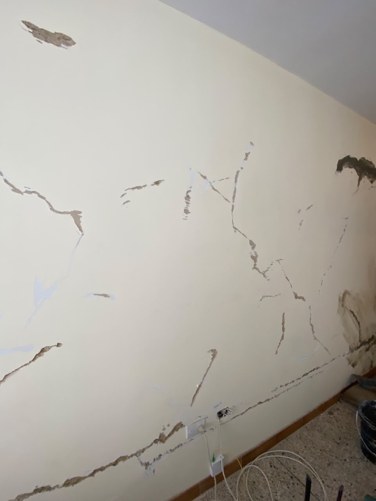
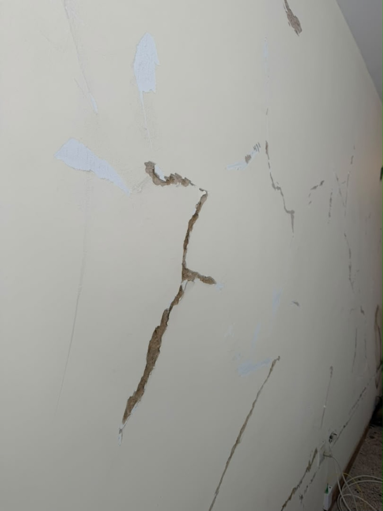

El daño, sin maquillaje.
Grietas diagonales en la pared principal, friso desprendido y fisuras extendidas en la tabiquería. Es el tipo de daño que asusta, y con razón: no toda grieta es cosmética.
Por eso el primer paso nunca es pintar por encima. Es diagnosticar: entender qué se agrietó, por qué, y si el elemento afectado cumple una función estructural.
Nota técnica: el diagnóstico define si corresponde resane de tabiquería o refuerzo estructural. Se documenta antes de intervenir.

